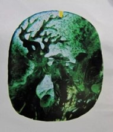

在腾冲，一直流传着这样一个关于杨树明“化腐朽为神奇”的传奇故事。
杨树明曾在一个翡翠毛料公司发现一块不被看好的毛料。该毛料材因棉点多、透度受限，被作为废料丢弃在仓库墙角。杨树明看到后，花低价买下，经过一年多反复思索，他以唐诗中“日暮苍山远，天寒白屋贫。柴门闻犬吠，风雪夜归人。”的诗句为参照，大胆创新，通过“引诗入雕”、巧用棉点，将原来被认为是杂质的棉点雕刻成风雪。同时，充分利用毛料本身不同区域的色彩差异，雕刻出“树”“戴斗笠的老人”“山”等形象。在杨树明的的巧手精雕细琢下，一件名为《风雪夜归人》的玉雕作品横空出世，生动诠释了上述唐诗中的意境。
后来，《风雪夜归人》被人收购后，在香港的拍卖行卖出了360万元的高价，在玉雕界传为美谈。
“每一块玉石都是独一无二的，想要完成一份好的玉雕作品，就得像交朋友一样，先读懂这块玉石，了解它的特性后，因材施艺。”杨树明说。